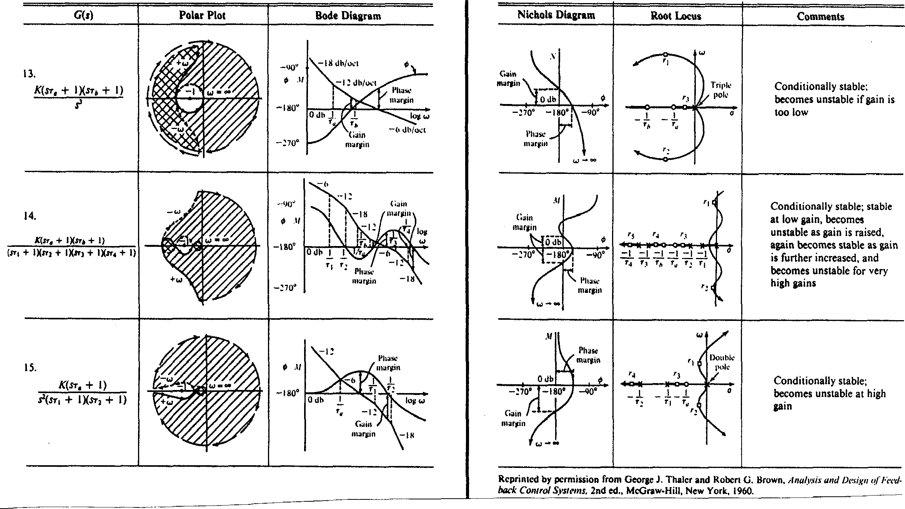

Appendix – Transfer Function Plots for Typical Transfer Functions
Note error in Nyquist diagrams for terms with denominator factor $s(s\tau_1 +1)$. The real part of $G(j\omega)$ does not (necessarily) tend to zero as $\omega \to \infty$.
Table A1 Transfer function plots for typical transfer functions

Table A2 Transfer function plots for typical transfer functions (continued)

Table A3 Transfer function plots for typical transfer functions (continued)

Table A4 Transfer function plots for typical transfer functions (continued)
